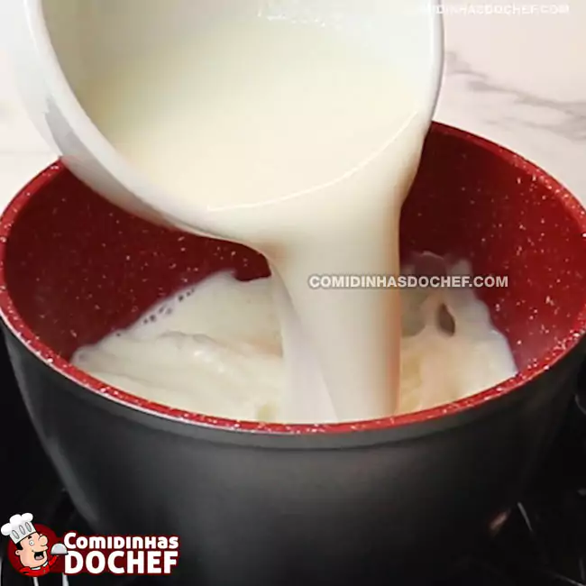
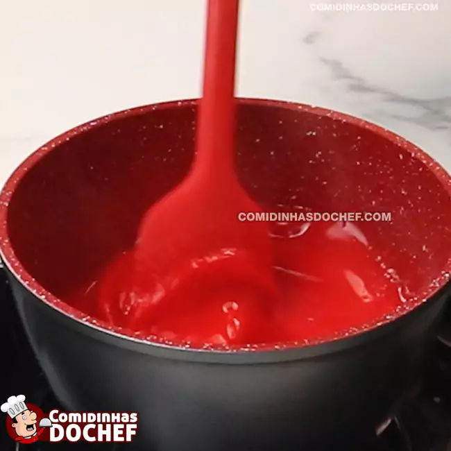
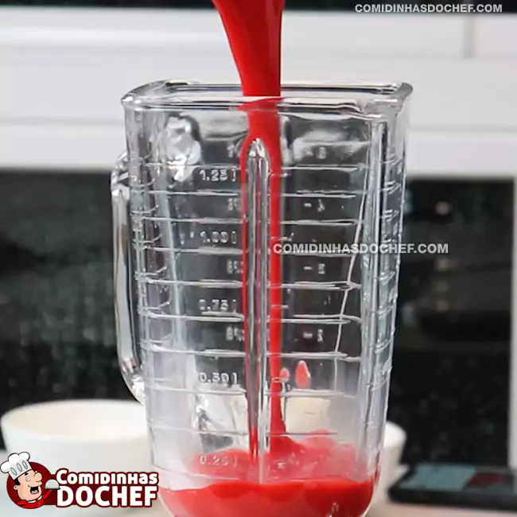
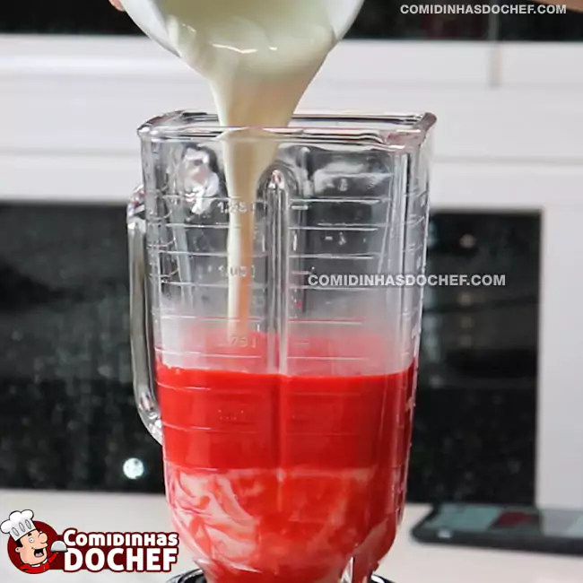
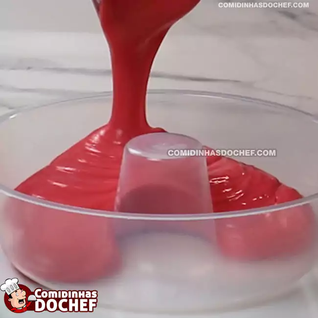
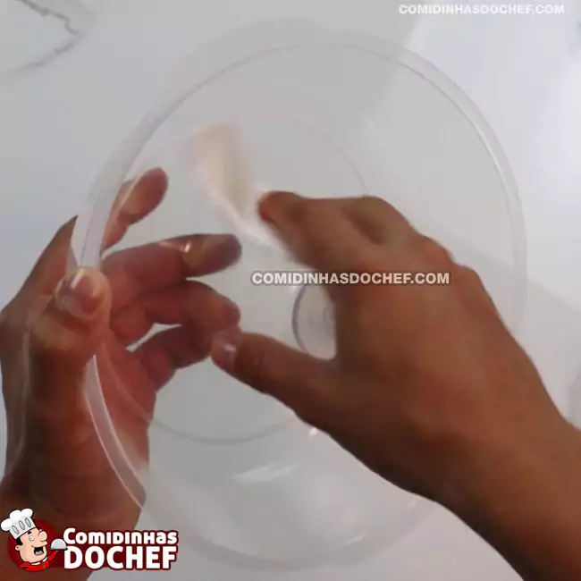
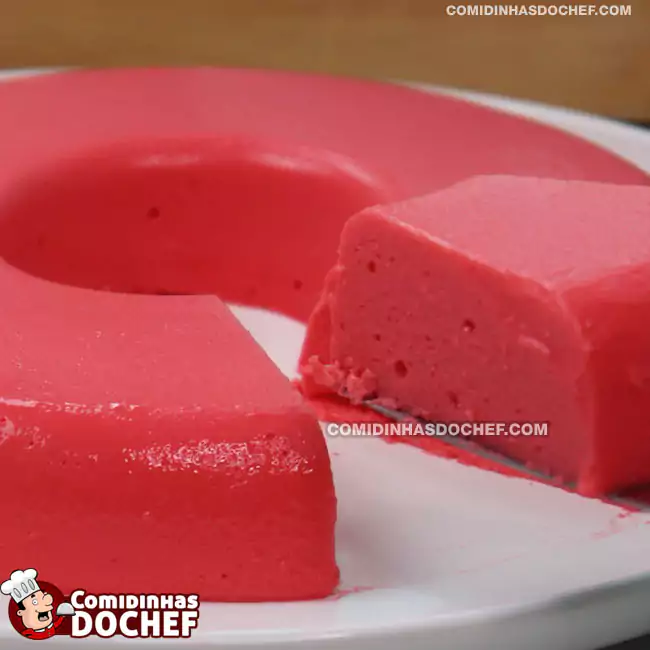

Que tal aprender como fazer pudim de geladeira de morango maravilhoso, com uma receita que não
precisa levar ao forno e leva poucos ingredientes? Gostou da ideia? Então corre para a cozinha porque eu vou te
ensinar o passo a passo da receita de pudim de geladeira de morango! Quando eu penso em fazer uma sobremesa
rápida mas que fique bem gostosa, tanto para um almoço em família, jantar especial ou até mesmo para o dia a
dia, na hora me vem a cabeça essa receita de pudim de geladeira de morango porque é muito fácil de fazer. E como
não precisa levar ao forno, você faz o pudim de geladeira de morango em menos de 5 minutos, depois é só levar à
geladeira e esperar o pudim firmar.
Ingredientes
200 ml de leite
2 pacotinhos de gelatina de morango
1 caixa de leite condensado
1 caixa de creme de leite
Modo de preparo
Passo 1
Coloque o leite em uma panela e leve ao fogo baixo até ferver;

Passo 2
Quando levantar fervura, adicione a gelatina e misture até que dissolva bem; 
Passo 3
Desligue o fogo e transfira essa mistura para o liquidificador;
Passo 4
Adicione o leite condensado, o creme de leite e bata por 3 minutinhos;
Passo 5
Em seguida despeje essa mistura numa forma e leve para geladeira por 2 horas;
Passo 6
DICA: Para facilita na hora de desenformar, você pode untar a forma com óleo ou molhar a forma com água.

Passo 7
Desenforme e sirva.